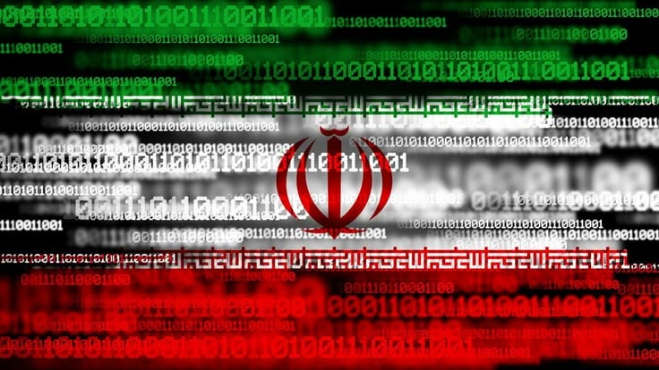

طقم أدوات سيبراني إيراني جديد يُستخدم ضد مقاولي دفاع خليجيين
9 يونيو 2025
مختبر التحليل المتقدم للتهديدات
iran-shadow-apt-toolkit-gulf-defense

توصل مختبر التحليل المتقدم للتهديدات إلى تحليل كامل لطقم أدوات سيبراني إيراني جديد يُحمل اسم "Labyrinth-3"، تم رصد استخدامه الفعلي في ثلاث عمليات تجسس إلكتروني ضد مقاولي دفاع خليجيين خلال الأشهر الأربعة الماضية.
الطقم يمثل قفزة نوعية في قدرات المجموعات الإيرانية المرتبطة بوزارة الاستخبارات، حيث يتضمن أدوات لم تُرصد سابقاً في ترسانة أي مجموعة APT إيرانية معروفة.
مكونات الطقم
يتكون Labyrinth-3 من أربع وحدات رئيسية تعمل بشكل متكامل:
- "Minotaur" — وحدة الاختراق الأولي: تستخدم تقنيات استغلال ملفات Office معتمدة على ثغرات يوم-صفر غير مُعلنة في معالج Equation Editor، مع تجاوز كامل لـ Protected View وMacro warnings
- "Theseus" — وحدة التنقل الأفقي: أداة fileless تعمل بالكامل في الذاكرة وتستخدم تقنيات process hollowing وmodule stomping للاختباء داخل عمليات شرعية مثل svchost.exe وexplorer.exe
- "Ariadne" — وحدة الاستخراج: تبحث عن ملفات محددة بأنماط ذكية (خطط دفاعية، عقود عسكرية، رسومات تقنية) وتُضغطها وتُشفّرها قبل إرسالها عبر قنوات DNS وHTTPS
- "Daedalus" — وحدة الإخفاء والتنظيف: تُزيل تلقائياً جميع آثار الاختراق بعد كل عملية مع تعديل سجلات Windows Event Log لتبدو طبيعية
ما يُميز Labyrinth-3 عن أدوات APT الأخرى هو قدرته على تجاوز أنظمة EDR المتقدمة مثل CrowdStrike Falcon وMicrosoft Defender for Endpoint — وهذا يتطلب اختباراً مسبقاً ضد هذه الأنظمة مما يشير إلى مستوى عالٍ من الموارد والخبرة.
كشفت عملية التحليل العكسي للطقم عن:
- أكثر من 45,000 سطر برمجي مكتوب بلغة C++ مع تجميع شرطي لـ 7 بيئات مختلفة
- آلية تحديث ذاتي مشفرة تسمح بإضافة قدرات جديدة دون إعادة نشر الطقم بالكامل
- استخدام تقنيات anti-analysis متعددة لمنع التحليل في البيئات الافتراضية
- وجود تعليقات برمجية باللغة الفارسية تُؤكد الأصل الإيراني
- أرقام إصدارات داخلية تُشير إلى أن التطوير بدأ في أوائل 2024 على الأقل
عمليات الاستخدام المُرصدة
- شركة دفاعية كبرى في الإمارات (يناير 2025) — استهداف ناجح جزئياً
- مقاول توريد عسكري في السعودية (مارس 2025) — تم احتواؤه قبل اكتمال الاستخراج
- شركة تقنية دفاعية في البحرين (مايو 2025) — تحت التحقيق
أُعدت حزمة دفاعية شاملة تتضمن مؤشرات كشف لجميع مكونات الطقم ومُشاركتها مع الجهات المعنية في دول الخليج.